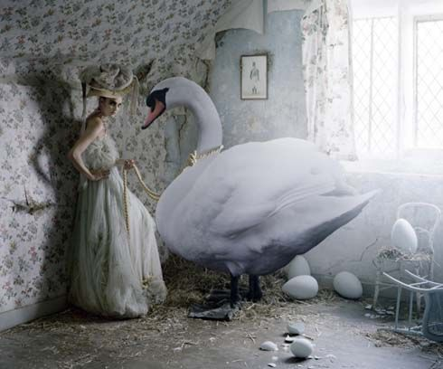
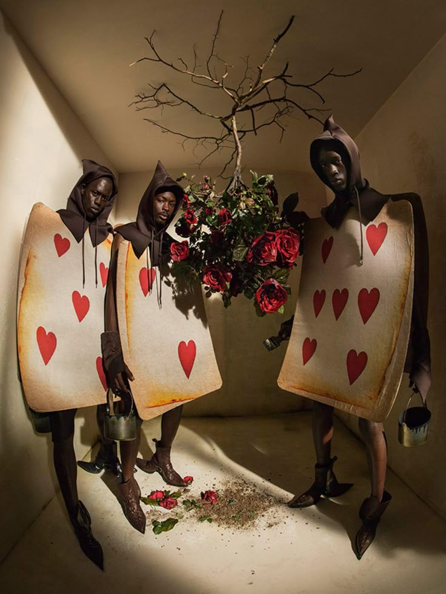
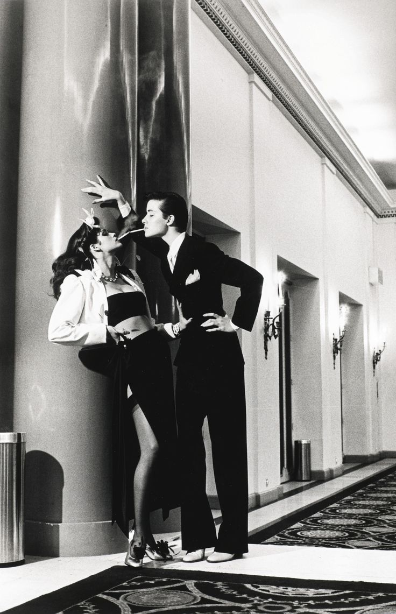
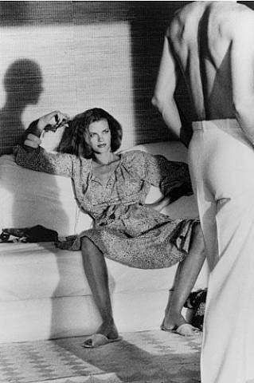
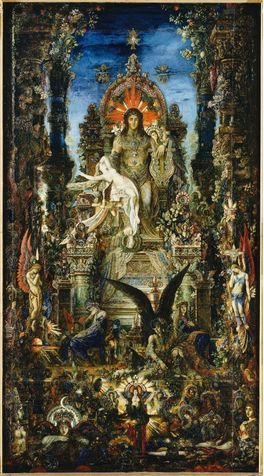
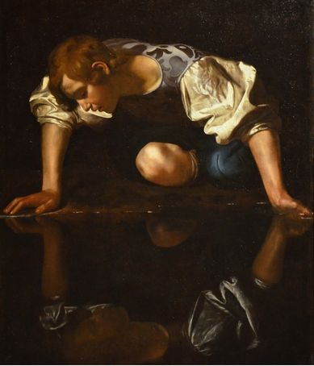
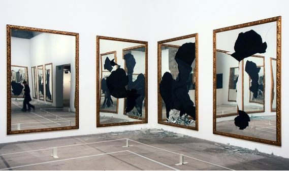

ACT I
The Art of Appearances
L’apparence, entre expression de soi et regard des autres. Une exploration de cette volonté de façonner son image, jusqu’à parfois chercher à correspondre à un idéal qui ne nous ressemble pas.
DREAMS IN FRAME
La photographie de mode devient un art de la mise en scène.
À travers l’univers de Tim Walker, les silhouettes prennent vie dans des décors oniriques où lumière, imagination et esthétique s’entremêlent pour donner naissance à des récits presque irréels.


POWER & SEDUCTION
Chez Helmut Newton, la photographie façonne une féminité affirmée, où le corps devient sujet de pouvoir et de fascination. Le vêtement révèle autant qu’il suggère, entre sensualité, audace et mise en scène.


Further Explorations

Gustave Moreau, 1895

Caravage, 1597-1599

Michelangelo Pistoletto, 2009
« Ceci n’est pas une pipe. »
—
René Magritte
—
René Magritte